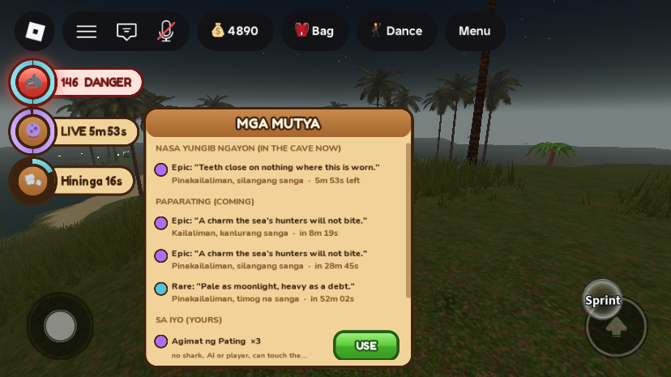
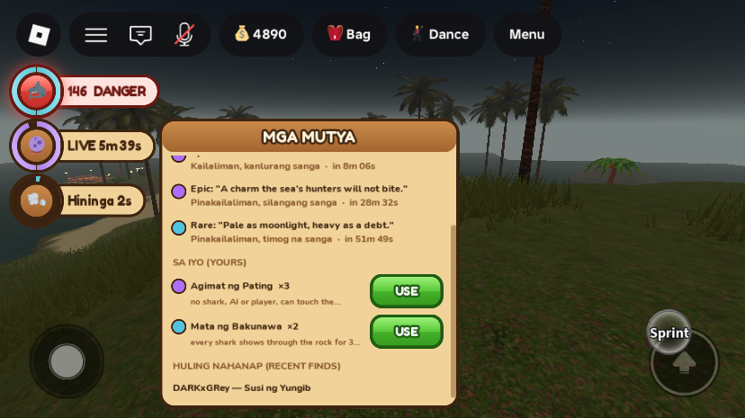
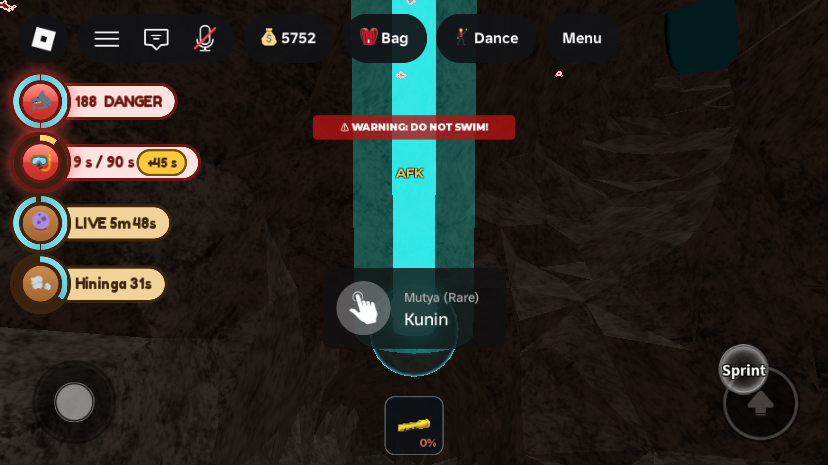
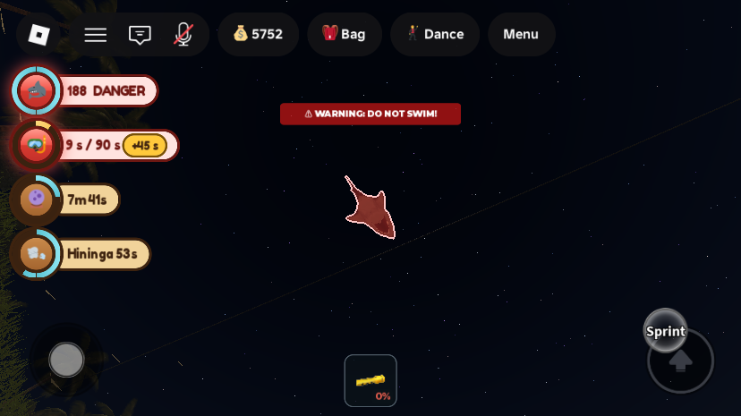

Phase 5: Mutya, the rare finds of the deep
What was asked
- Rare items spawn in the deep cave and are announced to everyone. Only a hint is given before one spawns, and it must be collected within a time limit. The finder is announced along with what it does, and a dropdown lists the spawn times. Items could be consumables with several uses, sellable, finder-only, or pets.
- The owner accepted the plan's recommendations: ship Agimat ng Pating, Hininga ng Diwata, Mata ng Bakunawa, Perlas ng Buwan and Susi ng Yungib first, and hold back flight (Pakpak ng Sarimanok), police immunity (Anting-anting ng Tanod), the Kabibe ng Swerte, and the pets (Phase 5b). A Mutya works for every job except the Pating.
What changed
1. The schedule, the hints and the announcements


- The new
RareFindServicekeeps the next 3 spawns queued. The first comes 10 minutes after a server starts, then one every 20–35 minutes. One is out at a time. - What surfaces is drawn by rarity: Rare 70, Epic 25, Legendary 5. None of the first five is Legendary, so today it is Rare or Epic. Where: deeper than y −110. Rare in deep junctions and dead ends, Epic in dead ends and the vaults at the end of the deep runs, Legendary only in those vaults (37 / 18 / 6 spawn points). A chamber shut off by a standing cave-in is never used; the new
CaveInBeyondattribute lists them. - Before it spawns only a riddle ("A key for a door the cave closed itself.") and a broad area ("Kailaliman, kanlurang sanga", from depth and compass direction) are shown, never the chamber or the name.
- Announcements (gold chat lines, via
IslandNotice):- 60 s before a spawn: "A Mutya stirs in … One minute."
- At spawn: "A Rare Mutya has surfaced in …! 6 minutes to claim it." Everyone in the cave also hears a low chime.
- When found: "DARKxGRey found the Susi ng Yungib (Rare): clears a cave-in in one go."
- If nobody gets there: "The Mutya in … dissolved. Nobody reached it in time."
- The badge and dropdown are a new crystal-ball badge in the left status column (
MutyaHud). It reads "LIVE 5:53" while one is out, otherwise the time to the next, ringed in its rarity colour. Tapping it opens MGA MUTYA, which scrolls when it is longer than the screen.
2. Finding one

- The orb bobs in its rarity colour, with sparkles, a light, and a shaft of light up to the chamber ceiling. It lasts 6 minutes.
- Collecting it is a 3 s hold ("Kunin"). A shark hit during the hold, from an AI shark bite or a Pating's lunge or strike (the new
SharkHitAtattribute), knocks it out of your hands: "A shark knocked the Mutya out of your hands! Grab it again." A Pating can't take one. - The prompt always shows, even next to a dropped item that uses the same key. In testing, a drowned diver's stash lying beside a Mutya hid its prompt completely.
3. The five Mutya
| Mutya | Rarity | Kind | What it does |
|---|---|---|---|
| Agimat ng Pating | Epic | finder-only, 3 uses | For 60 s no shark, AI or player, can touch you. AI sharks don't treat you as prey (SharkService), and a Pating's lunge and strike skip you (SharkPlayerService). |
| Hininga ng Diwata | Rare | finder-only, 2 uses | Your air doesn't drain for 90 s (BreathService). |
| Mata ng Bakunawa | Rare | finder-only, 2 uses | For 3 min the 25 nearest sharks, AI or player (eyes on or off), are outlined red through the rock (Roblox draws at most 31 outlines at once). |
| Perlas ng Buwan | Rare | sellable find | Goes in the finds sack and sells for 1,500 Peso at the Palengke, or at a tolda. Lost on drowning like any find. |
| Susi ng Yungib | Rare | sellable bag item | Goes in the bag (never refused for a full bag). Use it from the bag within 25 studs of a cave-in and that cave-in clears. It can be dropped, lost on drowning, stolen from a broken bodega, or sold at a tolda. The Palengke never sells one. It has its own small glowing key model for the bag and for drops. |

- Finder-only Mutya are kept on the profile (
profile.Mutya). They can't be dropped, lost or stolen, and are used with USE in the dropdown. While one is working, a second badge counts it down ("Agimat 58s"). Using one again while it works is refused. They are session effects: rejoining mid-effect ends them. - Changed from the plan: the plan listed the hotbar. Mutya are used from the dropdown instead, so the hotbar and top bar stay untouched, per the saved UI rule.
All changes
| Instance | Change | |
|---|---|---|
ServerScriptService.RareFindService | new | Script: schedule, spawn points and areas, the Mutya model, collection with the shark-hit check, awarding by kind, announcements, USE, MutyaJson and MutyaOwnedJson. Studio-only hook ServerStorage.DebugMutya ("spawn", key?; "give", player, key, uses?; "expire"; "reset", player). |
StarterPlayer.StarterPlayerScripts.MutyaHud | new | LocalScript: crystal-ball badge, working-Mutya badge, the MGA MUTYA dropdown, the Mata outlines, the cave chime. |
ReplicatedStorage.Remotes.MutyaEvent | new | RemoteEvent (made by RareFindService): client "use", key; server "chime", position, rarity. |
ServerStorage.CaveInClearNear | new | BindableFunction (made by CaveInService): (position, player) → label | nil, clearing the nearest standing cave-in within 25 studs. Used by the Susi. |
ServerStorage.ItemAssets.SusiKey, ReplicatedStorage.ItemIcons.susi | new | A small key of 10 parts (slate shaft, bow and teeth, glowing blue gem): the drop model and the bag icon. |
ReplicatedStorage.ItemConfig | edit | New MutyaRarity and Mutya tables; Items.susi (mutya = true, kept out of the shop by SortedShopItems); Loot.perlasbuwan (sells 1,500); RoleGear.susi (every job but Pating). |
ServerScriptService.InventoryService | edit | Buying refuses a Mutya item; using the Susi calls CaveInClearNear. |
ServerScriptService.CaveInService | edit | CaveInClearNear; workspace.CaveInBeyond (the chambers each standing plug shuts off); header note. |
ServerScriptService.SharkService | edit | An Agimat wearer is not prey; a bite sets SharkHitAt. |
ServerScriptService.SharkPlayerService | edit | An Agimat wearer is not a lunge or strike candidate; a lunge hit and a strike hit set SharkHitAt. |
ServerScriptService.BreathService | edit | No drain while HiningaUntil is ahead. |
ServerScriptService.PlayerProfileService | edit | Load default for the new field Mutya. |
Workspace.MutyaSpawns.Mutya | runtime | The live Mutya: Orb (with TakePrompt), Halo, Shaft, ShaftGlow. |
New attributes: ReplicatedStorage MutyaJson; workspace CaveInBeyond; player MutyaOwnedJson, AgimatUntil, HiningaUntil, MataUntil (server time the effect ends), SharkHitAt. New profile field: Mutya. Tuning (top of RareFindService): FIRST_SPAWN 600 s, GAP_MIN/GAP_MAX 20/35 min, LIVE_SECONDS 360, NOTICE_BEFORE 60, HOLD_SECONDS 3, QUEUE 3, DEEP_Y −110; weights and uses in ItemConfig.Mutya/MutyaRarity. Every edited script was compile-checked with loadstring; nothing was removed from the map.
Testing
Two playtests on MERS_Cov2 (display name DARKxGRey), each ended by kicking the player from the Server after DebugMutya "reset" took every Mutya back off the account. (Both kicks left Studio in Play mode with nobody in it, and it was stopped after that.) There were no script errors.
- Schedule: "Mutya online -- first in 10 min, then every 20-35 min; 37/18/6 spawn points". The queue held 3, at 576 s, 2,253 s and 4,186 s, each with a riddle and an area.
- Collect: an Agimat forced up in "Kailaliman, silangang sanga" was taken with a 3 s hold. The notice went to everyone, the finder got a toast, the profile got 3 uses, and the orb was removed.
- Agimat vs real sharks: placed 8 studs from an AI shark in open water, the diver was not bitten in 20 s with the Agimat on. With it off at the same spot: bitten within 1 s. A second USE while it worked was refused. The badge read "Agimat 58s".
- Hininga: underwater in the cave, air went 13.5 → 9.5 over 4 s without it, and held at 9.2 → 9.2 over 4 s with it.
- Mata: 25 outlines appeared (the cap) out of 188 sharks; screenshot above.
- Perlas ng Buwan: went into the finds sack. The test diver then ran out of air and drowned, and the Perlas dropped on the cave floor (
Dropped_perlasbuwan), as a sellable Mutya should. - Shark hit during the hold: a hit set one second into the hold gave "A shark knocked the Mutya out of your hands!" and the Mutya stayed. The next clean hold took it.
- Susi: taken into the bag, then used from the bag 13 studs from the Whisper Sump cave-in: "The Susi ng Yungib turns in the rock -- the rubble falls away." That cave-in cleared (another standing one did not), and the Susi was spent.
- Dissolving: a Mata left unclaimed gave "The Mutya in Pinakailaliman, hilagang sanga dissolved. Nobody reached it in time." and was removed.
- Found by testing and fixed: the dropped Perlas's pickup prompt hid the Mutya's prompt (both E, one per key), so the Mutya prompt is now always shown. The found-it notice read "With it, it sells for…", so the effect texts were reworded.
Gaps and things to check
- The natural clock was not watched: the 60 s notice, the first spawn at 10 minutes, and the gaps. The Mutya were forced with the hook. The 60 s notice uses the same path as the other notices that were seen.
- The chime was not heard (no audio in these captures), and whether it plays only in the cave was not checked.
- Not tested: the Agimat against a real Pating player (needs two players; the code path is the one every lunge and strike uses); selling a Perlas ng Buwan or Susi at a tolda; and a Legendary, since none of the first five is one.
- Only one working effect shows on the second badge at a time (the one ending soonest). The dropdown lists each Mutya's own timer.
- Test-only quirk: while a script held the camera (Scriptable), no ProximityPrompt showed on the client. This is not a game issue, but worth knowing for future tests.
- Test account: it drowned once more (the Hininga wore off in the cave), a real 15% bill (5,752 → 4,890 Peso, saved). No Mutya are left on it, and the dropped Perlas was removed before the kick. No quick-test values are left in the place.
Bodega.AxeDamage = 20from before is still there, to be restored in Phase 7.